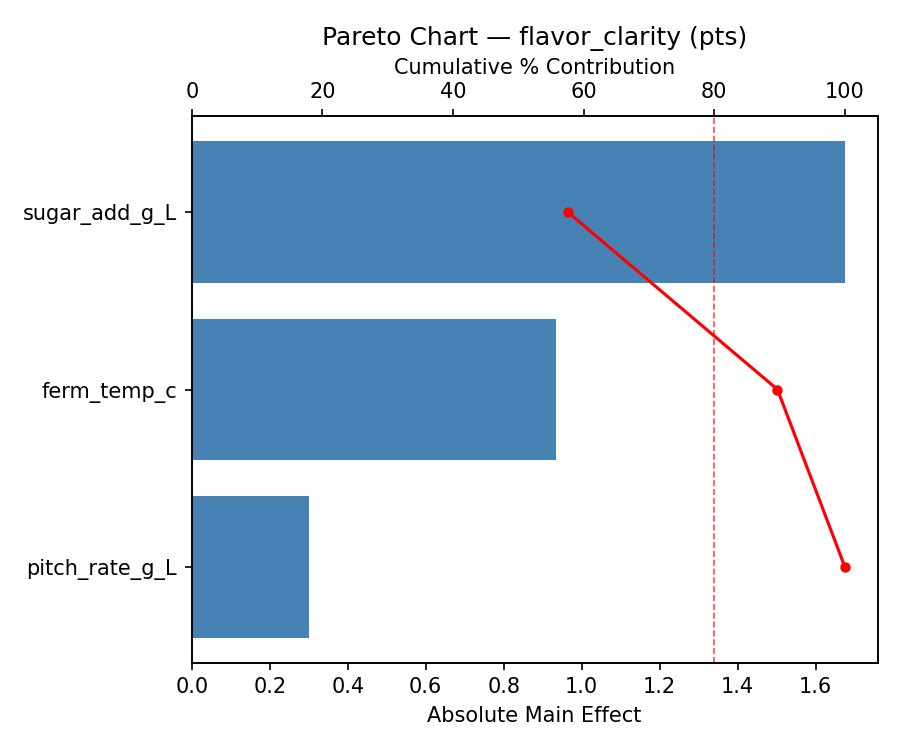
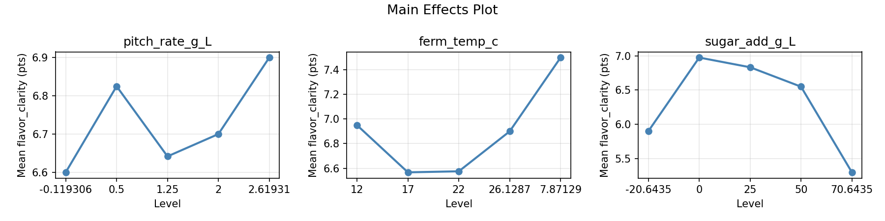
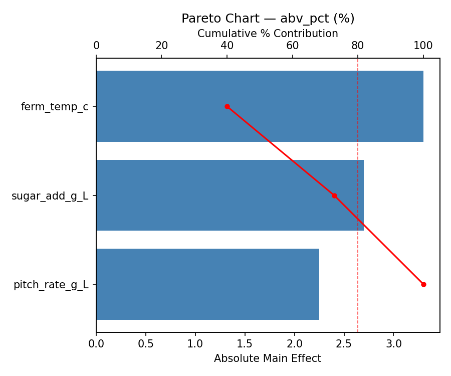
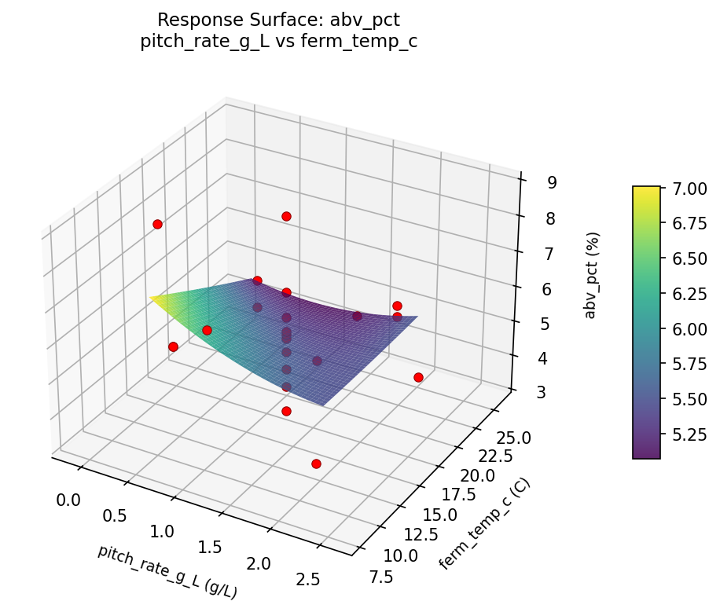

Summary
This experiment investigates hard cider fermentation. Central composite design to maximize flavor clarity and target ABV by tuning yeast pitch rate, fermentation temperature, and sugar addition.
The design varies 3 factors: pitch rate g L (g/L), ranging from 0.5 to 2.0, ferm temp c (C), ranging from 12 to 22, and sugar add g L (g/L), ranging from 0 to 50. The goal is to optimize 2 responses: flavor clarity (pts) (maximize) and abv pct (%) (maximize). Fixed conditions held constant across all runs include apple variety = mixed_cider, yeast = champagne.
A Central Composite Design (CCD) was selected to fit a full quadratic response surface model, including curvature and interaction effects. With 3 factors this produces 22 runs including center points and axial (star) points that extend beyond the factorial range.
Quadratic response surface models were fitted to capture potential curvature and factor interactions. The RSM contour plots below visualize how pairs of factors jointly affect each response.
Key Findings
For flavor clarity, the most influential factors were sugar add g L (57.6%), ferm temp c (32.1%), pitch rate g L (10.3%). The best observed value was 8.9 (at pitch rate g L = 1.25, ferm temp c = 17, sugar add g L = 25).
For abv pct, the most influential factors were ferm temp c (40.0%), sugar add g L (32.7%), pitch rate g L (27.3%). The best observed value was 8.8 (at pitch rate g L = 2, ferm temp c = 22, sugar add g L = 0).
Recommended Next Steps
- Run confirmation experiments at the predicted optimal settings to validate the model.
- Consider whether any fixed factors should be varied in a future study.
Experimental Setup
Factors
| Factor | Low | High | Unit |
|---|
pitch_rate_g_L | 0.5 | 2.0 | g/L |
ferm_temp_c | 12 | 22 | C |
sugar_add_g_L | 0 | 50 | g/L |
Fixed: apple_variety = mixed_cider, yeast = champagne
Responses
| Response | Direction | Unit |
|---|
flavor_clarity | ↑ maximize | pts |
abv_pct | ↑ maximize | % |
Configuration
{
"metadata": {
"name": "Hard Cider Fermentation",
"description": "Central composite design to maximize flavor clarity and target ABV by tuning yeast pitch rate, fermentation temperature, and sugar addition"
},
"factors": [
{
"name": "pitch_rate_g_L",
"levels": [
"0.5",
"2.0"
],
"type": "continuous",
"unit": "g/L"
},
{
"name": "ferm_temp_c",
"levels": [
"12",
"22"
],
"type": "continuous",
"unit": "C"
},
{
"name": "sugar_add_g_L",
"levels": [
"0",
"50"
],
"type": "continuous",
"unit": "g/L"
}
],
"fixed_factors": {
"apple_variety": "mixed_cider",
"yeast": "champagne"
},
"responses": [
{
"name": "flavor_clarity",
"optimize": "maximize",
"unit": "pts"
},
{
"name": "abv_pct",
"optimize": "maximize",
"unit": "%"
}
],
"settings": {
"operation": "central_composite",
"test_script": "use_cases/240_cider_making/sim.sh"
}
}
Experimental Matrix
The Central Composite Design produces 22 runs. Each row is one experiment with specific factor settings.
| Run | pitch_rate_g_L | ferm_temp_c | sugar_add_g_L |
|---|
| 1 | 1.25 | 17 | 25 |
| 2 | 2 | 12 | 50 |
| 3 | 0.5 | 22 | 0 |
| 4 | 1.25 | 26.1287 | 25 |
| 5 | 1.25 | 17 | 25 |
| 6 | -0.119306 | 17 | 25 |
| 7 | 1.25 | 17 | -20.6435 |
| 8 | 1.25 | 17 | 25 |
| 9 | 2 | 22 | 0 |
| 10 | 2.61931 | 17 | 25 |
| 11 | 1.25 | 17 | 25 |
| 12 | 1.25 | 7.87129 | 25 |
| 13 | 1.25 | 17 | 25 |
| 14 | 0.5 | 12 | 50 |
| 15 | 1.25 | 17 | 25 |
| 16 | 2 | 12 | 0 |
| 17 | 1.25 | 17 | 70.6435 |
| 18 | 2 | 22 | 50 |
| 19 | 1.25 | 17 | 25 |
| 20 | 0.5 | 12 | 0 |
| 21 | 0.5 | 22 | 50 |
| 22 | 1.25 | 17 | 25 |
Step-by-Step Workflow
1
Preview the design
$ python doe.py info --config use_cases/240_cider_making/config.json
2
Generate the runner script
$ python doe.py generate --config use_cases/240_cider_making/config.json \
--output use_cases/240_cider_making/results/run.sh --seed 42
3
Execute the experiments
$ bash use_cases/240_cider_making/results/run.sh
4
Analyze results
$ python doe.py analyze --config use_cases/240_cider_making/config.json
5
Get optimization recommendations
$ python doe.py optimize --config use_cases/240_cider_making/config.json
6
Generate the HTML report
$ python doe.py report --config use_cases/240_cider_making/config.json \
--output use_cases/240_cider_making/results/report.html
Real-World Experiment Workflow
ℹ
Physical Fermentation Experiment? Use the Manual Workflow
Fermentation experiments involve living cultures, temperature-sensitive biological processes, and flavors that must be tasted and measured. The simulation script above is for demonstration. For your real experiments, use record, status, and export-worksheet.
$ python doe.py export-worksheet --config use_cases/240_cider_making/config.json \
--format csv --output worksheet.csv
$ python doe.py status --config use_cases/240_cider_making/config.json
$ python doe.py record --config use_cases/240_cider_making/config.json --run 1
$ python doe.py analyze --config use_cases/240_cider_making/config.json --partial
$ python doe.py analyze --config use_cases/240_cider_making/config.json
$ python doe.py optimize --config use_cases/240_cider_making/config.json
$ python doe.py report --config use_cases/240_cider_making/config.json \
--output report.html
✔
Works Without a Test Script
The analysis pipeline doesn't care how results were produced. Record your measurements with record, and the full analysis, optimization, and reporting pipeline works identically. Use --partial to get early insights before all runs are complete.
Features Exercised
| Feature | Value |
|---|
| Design type | central_composite |
| Factor types | continuous (all 3) |
| Arg style | double-dash |
| Responses | 2 (flavor_clarity ↑, abv_pct ↑) |
| Total runs | 22 |
Analysis Results
Generated from actual experiment runs using the DOE Helper Tool.
Response: flavor_clarity
Top factors: sugar_add_g_L (57.6%), ferm_temp_c (32.1%), pitch_rate_g_L (10.3%).
Pareto Chart

Main Effects Plot

Response: abv_pct
Top factors: ferm_temp_c (40.0%), sugar_add_g_L (32.7%), pitch_rate_g_L (27.3%).
Pareto Chart

Main Effects Plot

Response Surface Plots
3D surfaces fitted with quadratic RSM. Red dots are observed data points.
abv pct ferm temp c vs sugar add g L

abv pct pitch rate g L vs ferm temp c

abv pct pitch rate g L vs sugar add g L

flavor clarity ferm temp c vs sugar add g L

flavor clarity pitch rate g L vs ferm temp c

flavor clarity pitch rate g L vs sugar add g L

Full Analysis Output
RSM surface: rsm_flavor_clarity_pitch_rate_g_L_vs_ferm_temp_c.png
RSM surface: rsm_flavor_clarity_pitch_rate_g_L_vs_sugar_add_g_L.png
RSM surface: rsm_flavor_clarity_ferm_temp_c_vs_sugar_add_g_L.png
RSM surface: rsm_abv_pct_pitch_rate_g_L_vs_ferm_temp_c.png
RSM surface: rsm_abv_pct_pitch_rate_g_L_vs_sugar_add_g_L.png
RSM surface: rsm_abv_pct_ferm_temp_c_vs_sugar_add_g_L.png
=== Main Effects: flavor_clarity ===
Factor Effect Std Error % Contribution
--------------------------------------------------------------
sugar_add_g_L 1.6750 0.1784 57.6%
ferm_temp_c 0.9333 0.1784 32.1%
pitch_rate_g_L 0.3000 0.1784 10.3%
=== Summary Statistics: flavor_clarity ===
pitch_rate_g_L:
Level N Mean Std Min Max
------------------------------------------------------------
-0.119306 1 6.6000 0.0000 6.6000 6.6000
0.5 4 6.8250 0.2062 6.6000 7.1000
1.25 12 6.6417 1.1172 4.9000 8.9000
2 4 6.7000 0.4830 6.0000 7.1000
2.61931 1 6.9000 0.0000 6.9000 6.9000
ferm_temp_c:
Level N Mean Std Min Max
------------------------------------------------------------
12 4 6.9500 0.1732 6.8000 7.1000
17 12 6.5667 1.0840 4.9000 8.9000
22 4 6.5750 0.4031 6.0000 6.9000
26.1287 1 6.9000 0.0000 6.9000 6.9000
7.87129 1 7.5000 0.0000 7.5000 7.5000
sugar_add_g_L:
Level N Mean Std Min Max
------------------------------------------------------------
-20.6435 1 5.9000 0.0000 5.9000 5.9000
0 4 6.9750 0.1500 6.8000 7.1000
25 12 6.8333 1.0003 4.9000 8.9000
50 4 6.5500 0.3786 6.0000 6.8000
70.6435 1 5.3000 0.0000 5.3000 5.3000
=== Main Effects: abv_pct ===
Factor Effect Std Error % Contribution
--------------------------------------------------------------
ferm_temp_c 3.3000 0.2815 40.0%
sugar_add_g_L 2.7000 0.2815 32.7%
pitch_rate_g_L 2.2500 0.2815 27.3%
=== Summary Statistics: abv_pct ===
pitch_rate_g_L:
Level N Mean Std Min Max
------------------------------------------------------------
-0.119306 1 7.6000 0.0000 7.6000 7.6000
0.5 4 5.3500 0.4359 4.7000 5.6000
1.25 12 5.5417 1.5553 3.3000 8.8000
2 4 5.3500 1.2767 3.5000 6.4000
2.61931 1 5.4000 0.0000 5.4000 5.4000
ferm_temp_c:
Level N Mean Std Min Max
------------------------------------------------------------
12 4 5.2750 1.2420 3.5000 6.4000
17 12 5.6500 1.5103 3.3000 8.8000
22 4 5.4250 0.5123 4.7000 5.9000
26.1287 1 4.2000 0.0000 4.2000 4.2000
7.87129 1 7.5000 0.0000 7.5000 7.5000
sugar_add_g_L:
Level N Mean Std Min Max
------------------------------------------------------------
-20.6435 1 6.7000 0.0000 6.7000 6.7000
0 4 5.7750 0.4193 5.5000 6.4000
25 12 5.7333 1.5582 3.3000 8.8000
50 4 4.9250 1.0782 3.5000 5.9000
70.6435 1 4.0000 0.0000 4.0000 4.0000
Pareto chart (flavor_clarity): use_cases/240_cider_making/results/analysis/pareto_flavor_clarity.png
Pareto chart (abv_pct): use_cases/240_cider_making/results/analysis/pareto_abv_pct.png
Main effects (flavor_clarity): use_cases/240_cider_making/results/analysis/main_effects_flavor_clarity.png
Main effects (abv_pct): use_cases/240_cider_making/results/analysis/main_effects_abv_pct.png
Optimization Recommendations
=== Optimization: flavor_clarity ===
Direction: maximize
Best observed run: #12
pitch_rate_g_L = 1.25
ferm_temp_c = 17
sugar_add_g_L = 25
Value: 8.9
RSM Model (linear, R² = 0.0472, Adj R² = -0.1116):
Coefficients:
intercept +6.6955
pitch_rate_g_L -0.1414
ferm_temp_c -0.0578
sugar_add_g_L +0.1550
RSM Model (quadratic, R² = 0.2422, Adj R² = -0.3261):
Coefficients:
intercept +7.0047
pitch_rate_g_L -0.1414
ferm_temp_c -0.0578
sugar_add_g_L +0.1550
pitch_rate_g_L*ferm_temp_c +0.0875
pitch_rate_g_L*sugar_add_g_L +0.3125
ferm_temp_c*sugar_add_g_L -0.2375
pitch_rate_g_L^2 -0.1646
ferm_temp_c^2 -0.0596
sugar_add_g_L^2 -0.2396
Curvature analysis:
sugar_add_g_L coef=-0.2396 concave (has a maximum)
pitch_rate_g_L coef=-0.1646 concave (has a maximum)
ferm_temp_c coef=-0.0596 negligible curvature
Notable interactions:
pitch_rate_g_L*sugar_add_g_L coef=+0.3125 (synergistic)
Predicted optimum (from linear model):
pitch_rate_g_L = 0.5
ferm_temp_c = 12
sugar_add_g_L = 50
Predicted value: 7.0497
Model quality: Weak fit — consider adding center points or using a different design.
Factor importance:
1. sugar_add_g_L (effect: 1.4, contribution: 47.1%)
2. pitch_rate_g_L (effect: 1.2, contribution: 40.8%)
3. ferm_temp_c (effect: 0.4, contribution: 12.1%)
=== Optimization: abv_pct ===
Direction: maximize
Best observed run: #17
pitch_rate_g_L = 2
ferm_temp_c = 22
sugar_add_g_L = 0
Value: 8.8
RSM Model (linear, R² = 0.1748, Adj R² = 0.0373):
Coefficients:
intercept +5.5591
pitch_rate_g_L -0.2709
ferm_temp_c +0.5762
sugar_add_g_L -0.1761
RSM Model (quadratic, R² = 0.6708, Adj R² = 0.4239):
Coefficients:
intercept +5.2801
pitch_rate_g_L -0.2709
ferm_temp_c +0.5762
sugar_add_g_L -0.1761
pitch_rate_g_L*ferm_temp_c +1.2000
pitch_rate_g_L*sugar_add_g_L -0.0250
ferm_temp_c*sugar_add_g_L -0.2250
pitch_rate_g_L^2 +0.2495
ferm_temp_c^2 +0.4145
sugar_add_g_L^2 -0.2455
Curvature analysis:
ferm_temp_c coef=+0.4145 convex (has a minimum)
pitch_rate_g_L coef=+0.2495 convex (has a minimum)
sugar_add_g_L coef=-0.2455 concave (has a maximum)
Notable interactions:
pitch_rate_g_L*ferm_temp_c coef=+1.2000 (synergistic)
Predicted optimum (from quadratic model):
pitch_rate_g_L = 1.25
ferm_temp_c = 26.1287
sugar_add_g_L = 25
Predicted value: 7.7138
Model quality: Moderate fit — use predictions directionally, not precisely.
Factor importance:
1. sugar_add_g_L (effect: 3.3, contribution: 46.3%)
2. ferm_temp_c (effect: 2.4, contribution: 34.6%)
3. pitch_rate_g_L (effect: 1.3, contribution: 19.1%)